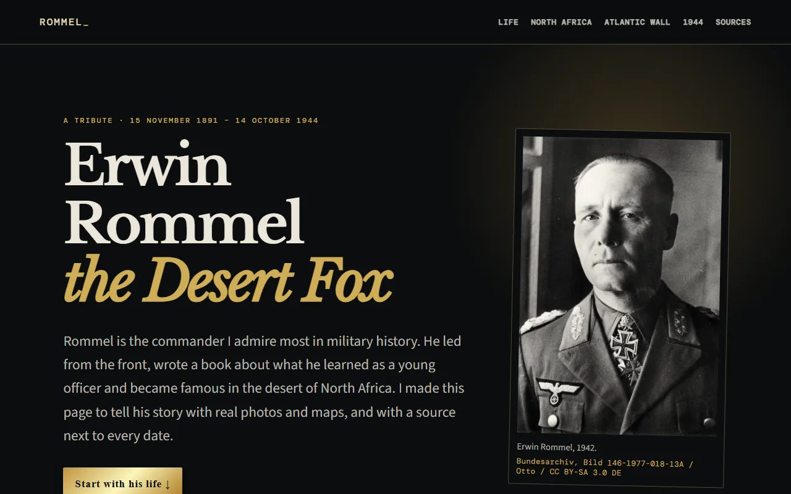

Project I
Tribute page to Erwin Rommel
History told with photos, maps and a source for every date.
A tribute to the commander I admire most: his life, the North Africa campaign and the Atlantic Wall. It uses only public-domain and Bundesarchiv photos from Wikimedia Commons, each with its credit and licence, and every date is checked against the Deutsches Historisches Museum and the US Holocaust Memorial Museum. HTML and CSS only.
Open the site